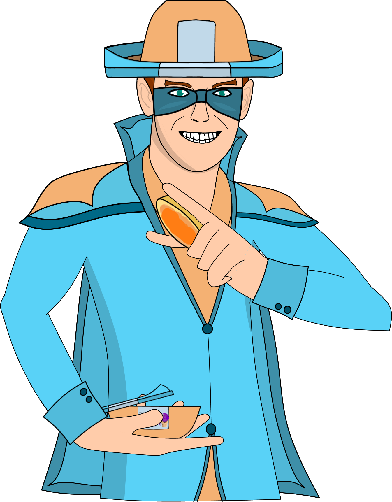

<mat-toolbar>
  <button mat-icon-button *ngIf="sidenav.mode === 'over'" (click)="sidenav.toggle()">
    <mat-icon *ngIf="!sidenav.opened">menu</mat-icon>
    <mat-icon *ngIf="sidenav.opened">close</mat-icon>
 </button>
  Asphalt Annihilation 2
  </mat-toolbar>
<mat-sidenav-container>
  <mat-sidenav #sidenav="matSidenav">
    <h4 class="name">Current Character:</h4>
    <p class="designation">Karamba Man</p>
    

    <mat-divider></mat-divider>
    <button mat-button class="menu-button" [routerLink]="['game']">
      <mat-icon>search</mat-icon>
      <span>Find Game</span>
    </button>
    <button mat-button class="menu-button">
      <mat-icon>airport_shuttle</mat-icon>
      <span>Upgrade Vehicle</span>
    </button>
    <button mat-button class="menu-button" [routerLink]="['characterselect']">
      <mat-icon>person</mat-icon>
      <span>Select Character</span>
    </button>
    <button mat-button class="menu-button">
      <mat-icon>settings</mat-icon>
      <span>Options</span>
    </button>
  </mat-sidenav>
  <mat-sidenav-content>
    <div class="content mat-elevation-z4">
      <router-outlet></router-outlet>
    </div>
  </mat-sidenav-content>
</mat-sidenav-container>
